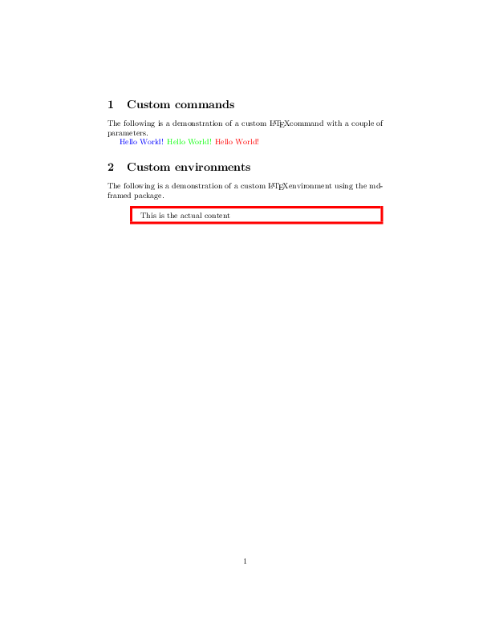

Own commands example¶
How to represent your own LaTeX commands and environments in PyLaTeX.
-
class
ExampleEnvironment(options=None, arguments=None)¶ A class representing a custom LaTeX environment.
This class represents a custom LaTeX environment named
exampleEnvironment.
-
class
ExampleCommand(options=None, arguments=None)¶ A class representing a custom LaTeX command.
This class represents a custom LaTeX command named
exampleCommand.
The code¶
from pylatex.base_classes import Environment
from pylatex.parameters import Arguments
from pylatex.package import Package, Command
from pylatex import Document, Section
class ExampleEnvironment(Environment):
"""
A class representing a custom LaTeX environment.
This class represents a custom LaTeX environment named
``exampleEnvironment``.
"""
_latex_name = 'exampleEnvironment'
def __init__(self, options=None, arguments=None):
packages = [Package('mdframed')]
super().__init__(options=options, arguments=arguments,
packages=packages)
class ExampleCommand(Command):
"""
A class representing a custom LaTeX command.
This class represents a custom LaTeX command named
``exampleCommand``.
"""
def __init__(self, options=None, arguments=None):
packages = [Package('color')]
super().__init__('exampleCommand', options=options,
arguments=arguments, packages=packages)
# Create a new document
doc = Document()
with doc.create(Section('Custom commands')):
doc.append(
"""
The following is a demonstration of a custom \\LaTeX
command with a couple of parameters.
""")
# Define the new command
new_comm = Command('newcommand{\\exampleCommand}', options=3,
arguments='\\color{#1} #2 #3 \\color{black}')
doc.append(new_comm)
# Use our newly created command with different arguments
doc.append(ExampleCommand(arguments=Arguments('blue', 'Hello', 'World!')))
doc.append(ExampleCommand(arguments=Arguments('green', 'Hello', 'World!')))
doc.append(ExampleCommand(arguments=Arguments('red', 'Hello', 'World!')))
with doc.create(Section('Custom environments')):
doc.append(
"""
The following is a demonstration of a custom \\LaTeX
environment using the mdframed package.
""")
# Define a style for our box
mdf_style_definition = Command('mdfdefinestyle',
arguments=['my_style',
'linecolor=#1,\
linewidth=#2,\
leftmargin=1cm,\
leftmargin=1cm'])
# Define the new environment using the style definition above
new_env = Command('newenvironment{exampleEnvironment}', options=2,
arguments=[
mdf_style_definition.dumps() +
'\\begin{mdframed}[style=my_style]',
'\\end{mdframed}'])
doc.append(new_env)
# Usage of the newly created environment
with doc.create(
ExampleEnvironment(arguments=Arguments('red', 3))) as environment:
environment.append('This is the actual content')
# Generate pdf
doc.generate_pdf('own_commands_ex')
The generated pdfs¶

own_commands_ex.pdf